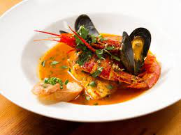
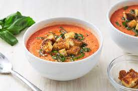

Pasta is a type of food typically made from an unleavened dough of wheat flour mixed with water or eggs, and formed into sheets or other shapes
Pizza is is a savory dish of Italian origin consisting of a usually round, flattened base of leavened wheat-based dough topped with tomatoes, cheese

The most well-known confit dishes are duck and goose legs, which are cured in salt before being cooked in rendered down duck or goose fat.
Bouillabaisse, complex fish soup originating on the Mediterranean coast of France, one of the glories of Provençal cuisine.

Paella valenciana is the traditional paella of the Valencia region, believed to be the original recipe, and consists of round grain rice, bajoqueta and tavella (varieties of green beans), peas, rabbit, chicken
Gazpacho is a light and fresh no-cook soup made with the ripest tomatoes or summer fruit. Get tips to make the best gazpacho

Beef Wellington is a steak dish of English origin, made out of fillet steak coated with pâté and duxelles

Shepherd's Meal Tradition · Prepare a simple meal; just use what you have on hand! · When the sun goes down, spread a blanket on your floor, light some candles,

sichuan pork is A Chinese-inspired one-pan supper with crunchy greens and nuts, and a rich chilli and soy sauce

dumplings which generally consists of minced meat and finely chopped vegetables wrapped into a piece of dough skin. In China dumplings usually refers to boiled dumplings.

Mansaf is a dish of rice, lamb, and a dry yoghurt made into a sauce called jameed. It's not only one of the the most beloved Jordanian foods
Kabsa (Arabic: كبسة kabsah) is a mixed rice dish, served on a communal platter, that originates from Saudi Arabia but is commonly regarded as a national dish

kimichi It's basically spicy, fermented cabbage, kind of like sauerkraut, but with Korean flavors – garlic, ginger & Korean chilies. Kimchi is like the heart and soul of Korean cooking.
hangover It means "soup to chase a hangover" and is also called sulguk (Korean: 술국). It usually consists of dried Napa cabbage, vegetables and meat in a hearty beef broth.

a traditional Japanese dish of prepared vinegared rice (鮨飯, sushi-meshi), usually with some sugar and salt,
is a thick noodle made from wheat flour, used in Japanese cuisine. It is a comfort food for many Japanese people.

clam chowder is actually a very simple soup to prepare with a few pantry ingredients. Now some recipes call for fresh clams

also burger for short) is a sandwich consisting of one or more cooked patties of ground meat, usually beef, placed inside a sliced bread roll or bun

Poutine made with thick beef gravy on french-fried potatoes with fresh cheese curds is a style commonly found outside Quebec

is a variety of flat quick bread or any large, round article baked or cooked from grain. A bannock is usually cut into sections before serving.

Feijoada is a stew of beans with beef and pork. It is commonly prepared in Portugal, Brazil, Angola, Cape Verde, Guinea-Bissau, Mozambique

cheese bread" in Portuguese) or Brazilian cheese bread is a small, baked cheese roll or cheese bun, a popular snack and breakfast food in Brazil.

chimcherry is an Argentinean sauce or condiment, similar to pesto, that is popular throughout South America. This basic version uses fresh parsley, oregano, garlic

Asado is the technique and the social event of having or attending a barbecue in various South American countries, especially Argentina